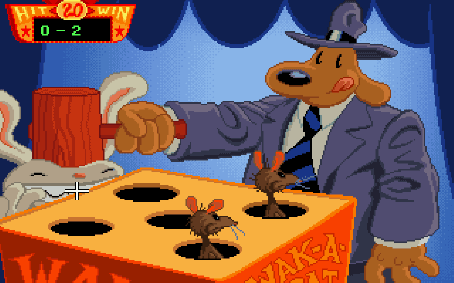

Home Page
F.A.Qs
Statistical Charts
Past Contests
Scheduled Contests
Award Contest
| Online Judge | Problem Set | Authors | Online Contests | User | ||||||
|---|---|---|---|---|---|---|---|---|---|---|
| Web Board Home Page F.A.Qs Statistical Charts | Current Contest Past Contests Scheduled Contests Award Contest | |||||||||
|
Language: Whac-a-Mole
Description  While visiting a traveling fun fair you suddenly have an urge to break the high score in the Whac-a-Mole game. The goal of the Whac-a-Mole game is to… well… whack moles. With a hammer. To make the job easier you have first consulted the fortune teller and now you know the exact appearance patterns of the moles. The moles appear out of holes occupying the n2 integer points (x, y) satisfying 0 ≤ x, y < n in a two-dimensional coordinate system. At each time step, some moles will appear and then disappear again before the next time step. After the moles appear but before they disappear, you are able to move your hammer in a straight line to any position (x2, y2) that is at distance at most d from your current position (x1, y1). For simplicity, we assume that you can only move your hammer to a point having integer coordinates. A mole is whacked if the center of the hole it appears out of is located on the line between (x1, y1) and (x2, y2) (including the two endpoints). Every mole whacked earns you a point. When the game starts, before the first time step, you are able to place your hammer anywhere you see fit. Input The input consists of several test cases. Each test case starts with a line containing three integers n, d and m, where n and d are as described above, and m is the total number of moles that will appear (1 ≤ n ≤ 20, 1 ≤ d ≤ 5, and 1 ≤ m ≤ 1000). Then follow m lines, each containing three integers x, y and t giving the position and time of the appearance of a mole (0 ≤ x, y < n and 1 ≤ t ≤ 10). No two moles will appear at the same place at the same time. The input is ended with a test case where n = d = m = 0. This case should not be processed. Output For each test case output a single line containing a single integer, the maximum possible score achievable. Sample Input 4 2 6 0 0 1 3 1 3 0 1 2 0 2 2 1 0 2 2 0 2 5 4 3 0 0 1 1 2 1 2 4 1 0 0 0 Sample Output 4 2 Source |
[Submit] [Go Back] [Status] [Discuss]
All Rights Reserved 2003-2013 Ying Fuchen,Xu Pengcheng,Xie Di
Any problem, Please Contact Administrator